2022 yılında Ankara Üniversitesi Hukuk Fakültesi öğrencileri tarafından kurulan AHDEM; yasama, yürütme ve yargı organlarının kurgusal toplantılarını düzenleyerek katılımcılarını hukuki ve toplumsal meseleler üzerinde araştırma yapmaya, müzakere etmeye ve ortak çözüm üretmeye teşvik eder.
Amacımız yalnızca bilgi aktarmak değil; öğrencilerin iş hayatında ve toplumsal yaşamda ihtiyaç duyacağı temel becerileri uygulayarak kazanabilecekleri bir alan kurmaktır.
Kaynak tarama, veri değerlendirme ve rapor hazırlama.
Farklı görüşler arasında uzlaşı arama ve ortak metin üretme.
Topluluk önünde etkili ve yapılandırılmış konuşma.
Sorumluluk alma, ekip yönetimi ve karar süreçlerini yürütme.
Ortak hedef etrafında rol paylaşımı ve iş birliği.
Bilgiyi sorgulama, argüman kurma ve değerlendirme.
Ankara Hukuk Demokrasi Müzakereleri (AHDEM) Konferansı; üniversite öğrencilerinin araştırma, müzakere, hitabet ve takım çalışması becerilerini deneyimleyerek geliştirdiği, Ankara Üniversitesi Hukuk Fakültesi çatısı altında yürütülen akademik bir gençlik organizasyonudur.
Her yıl olduğu gibi beşinci konferansımızda da Türkiye tarihinin bir dönemini akademik kaynaklar üzerinden yeniden okuyacağız. Konferansın tarihi ve ele alınacak dönem, hazırlıklar tamamlandığında duyurulacak.
Konferans; seçilen dönemi akademik kaynaklar üzerinden, dönemin kendi koşulları içinde ve güncel siyasi tartışmalardan bağımsız bir çerçevede ele alır. Amaç herhangi bir görüşü savunmak ya da yargılamak değil; öğrencilerin tarihsel analiz, hukuki muhakeme ve müzakere becerilerini geliştirmesidir.
Konferans, hukukçuların görev aldığı tüm alanların işleyişini bir arada canlandırır. Katılımcılar üç erki temsil eden yapılarda çalışır; ürettikleri kararlar birbirini doğrudan etkiler.
Meclis çatısı altında komisyon çalışmaları, kanun teklifleri ve genel kurul görüşmeleri yürütülür.
Dönemin hükümet yapısı içinde karar alma, uygulama ve gelişen olaylara yanıt verme süreçleri işletilir.
Dönemin önemli bir davası görülür; meclisten gelen düzenlemeler üst derece mahkemenin önüne taşınır.
Üst derece mahkemenin kararları meclisin gündemini değiştirir; meclisin çıkardığı düzenlemeler yargının önüne gelir. Katılımcılar bu karşılıklı etkiyi doğrudan deneyimler.
Program boyunca gelişen olaylara göre kurulan kriz komiteleri, katılımcıları sınırlı sürede karar alma ve uzlaşma durumlarıyla karşılaştırır.
Her yapı için akademik danışmanlar gözetiminde hazırlanan kaynak dosyası konferans öncesinde katılımcılara ulaştırılır; dört gün doğrudan çalışmaya ayrılır.
Katılımcılar dinleyici değil, sürecin aktörüdür. Kendilerine verilen kurum ve rolleri temsil ederek araştırır, müzakere eder, karar alır ve sonuçlarını değerlendirir.
Katılımcılara kaynak dosyası ve rol bilgilendirmesi gönderilir.
Akademisyen sunumlarıyla dönemin çerçevesi ortaya konur.
Komisyon, kriz komitesi ve mahkeme oturumlarında çalışma yürütülür.
Komisyon çıktıları genel oturumda müzakere edilir ve oylanır.
Kapanış oturumu, geri bildirim ve katılım belgeleri.
Komisyonların, kriz komitelerinin ve mahkeme sürecinin kuralları ile işleyişi akademik danışmanlar gözetiminde belirlenir ve konferans boyunca onlar tarafından yönetilir.
40 kişilik ekip, konferanstan yaklaşık altı ay önce hazırlığa başlar. Bugün sizinle iletişime geçen ekip, o hazırlığın içindedir.
Başta hukuk fakültesi öğrencileri olmak üzere; farklı fakültelerden ve Türkiye'nin farklı şehirlerinden öğrencilerin katılımı hedeflenmektedir.
Hedeflenen dağılım. Kesin oranlar başvuru sonrası netleşecektir.
2023'ten bu yana düzenlediğimiz konferanslarda katılımcılar, Türkiye'nin farklı dönemlerini tarihsel kaynaklar üzerinden inceliyor ve dönemin kurumlarını temsil ederek karar süreçlerini deneyimliyor.
Dönemin kurumsal yapısı, hukuki düzenlemeleri ve toplumsal dönüşümü.
Cumhuriyetin kuruluşu, hukuk devletinin inşası ve temsil kurumları.
Hukuk düzeni, kurumların işleyişi ve toplumsal değişim.
Ekonomik kriz ve hükümet kurulamama krizi; koalisyon süreçleri ve kurumsal istikrar.
Beşinci konferansın dönemi ve tarihi, hazırlıklar tamamlandığında duyurulacak.
ANAP Aydın eski Milletvekili, TBMM eski Başkanvekili ve Devlet eski Bakanı Dr. Yüksel Yalova, 2026 konferansımızda katılımcılarla bir araya geldi.
Her konferans; akademik danışmanlık, kaynak dosyası hazırlığı ve katılımcı eğitimi süreçlerini içeren yaklaşık altı aylık bir hazırlıkla yürütülür.
Her konferans; açılış oturumu, komisyon çalışmaları, genel kurul ve kapanış töreninden oluşan tam bir programla tamamlandı.
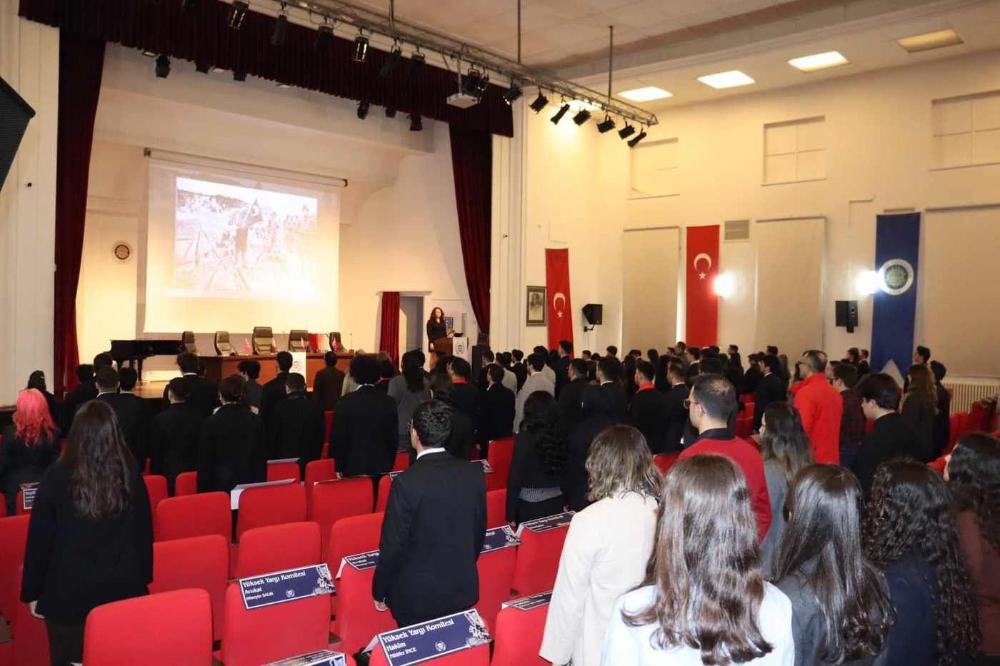
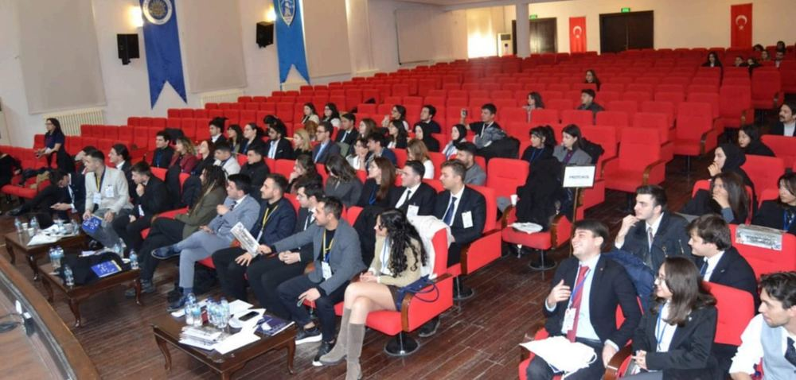
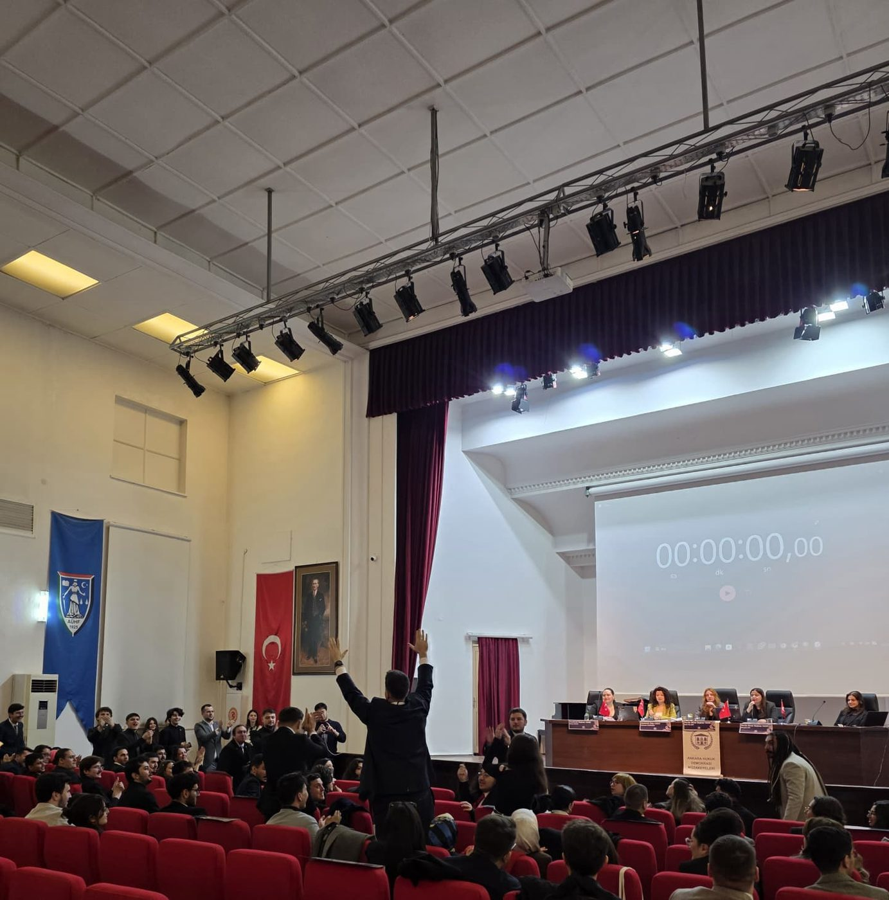
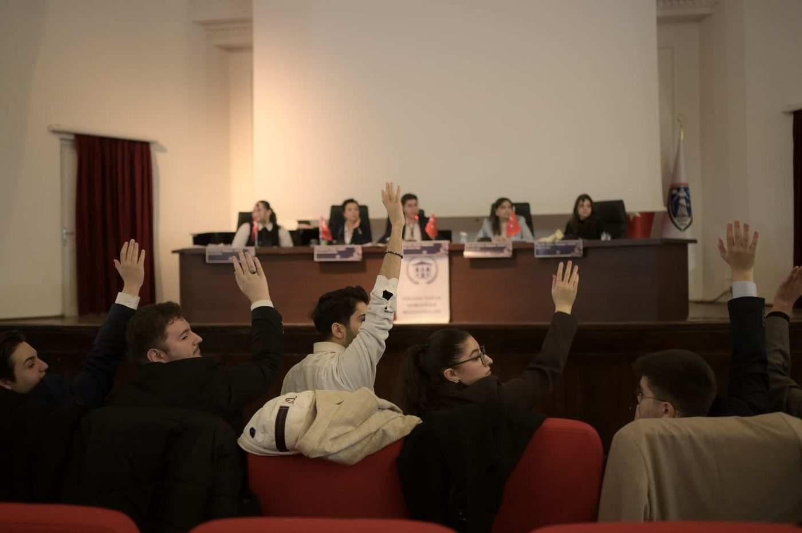
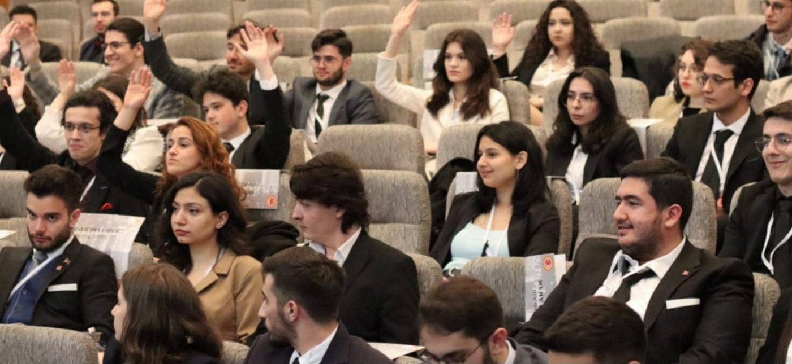
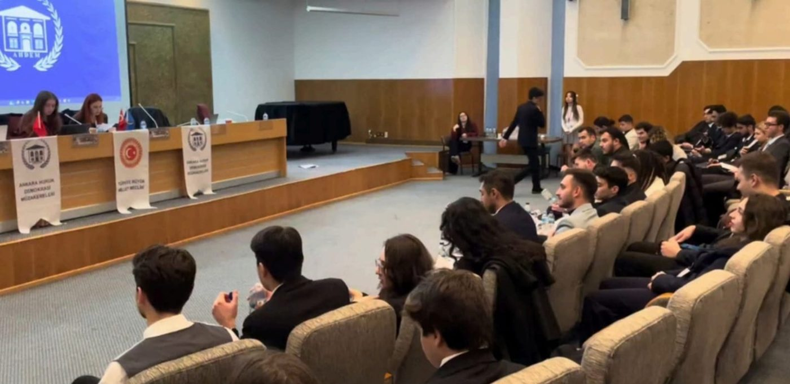
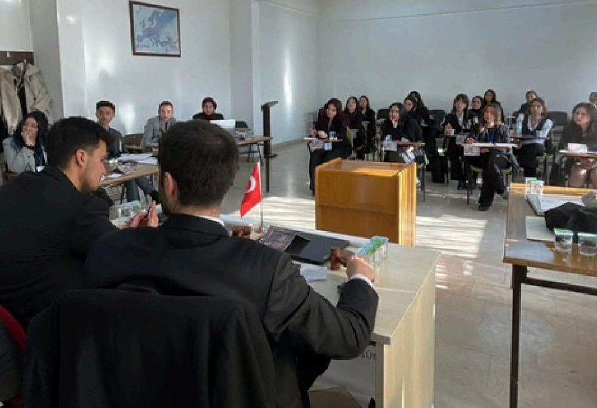
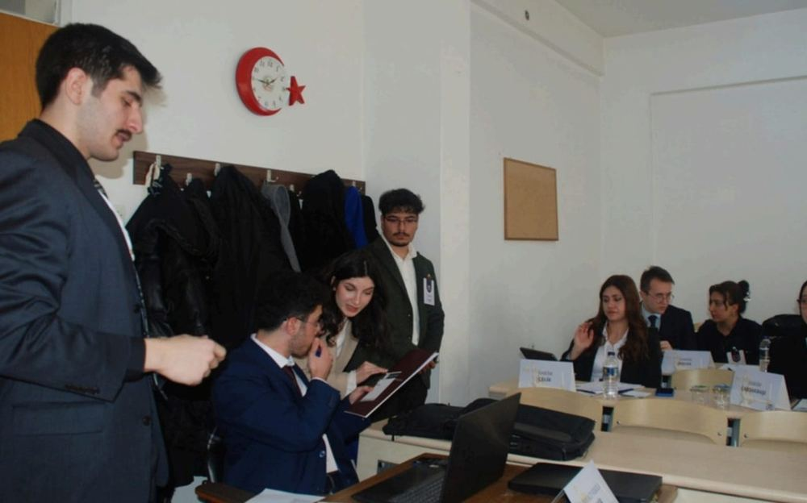
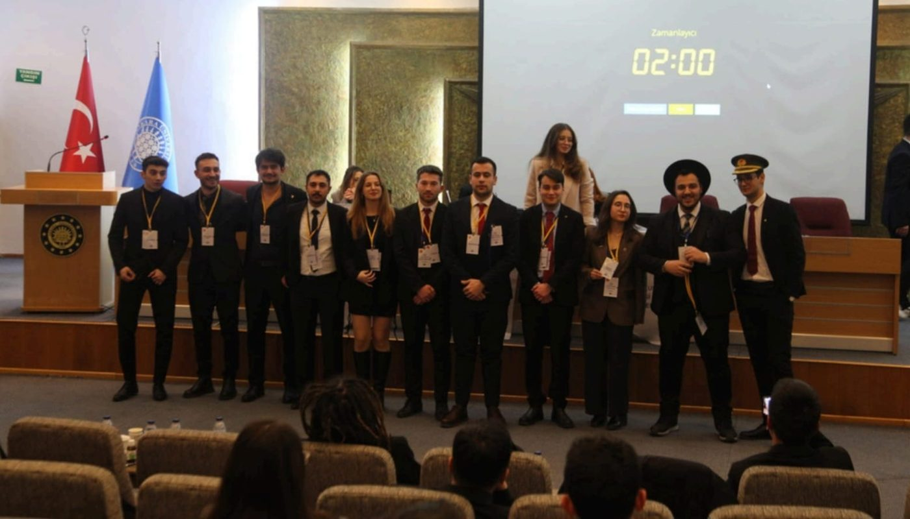
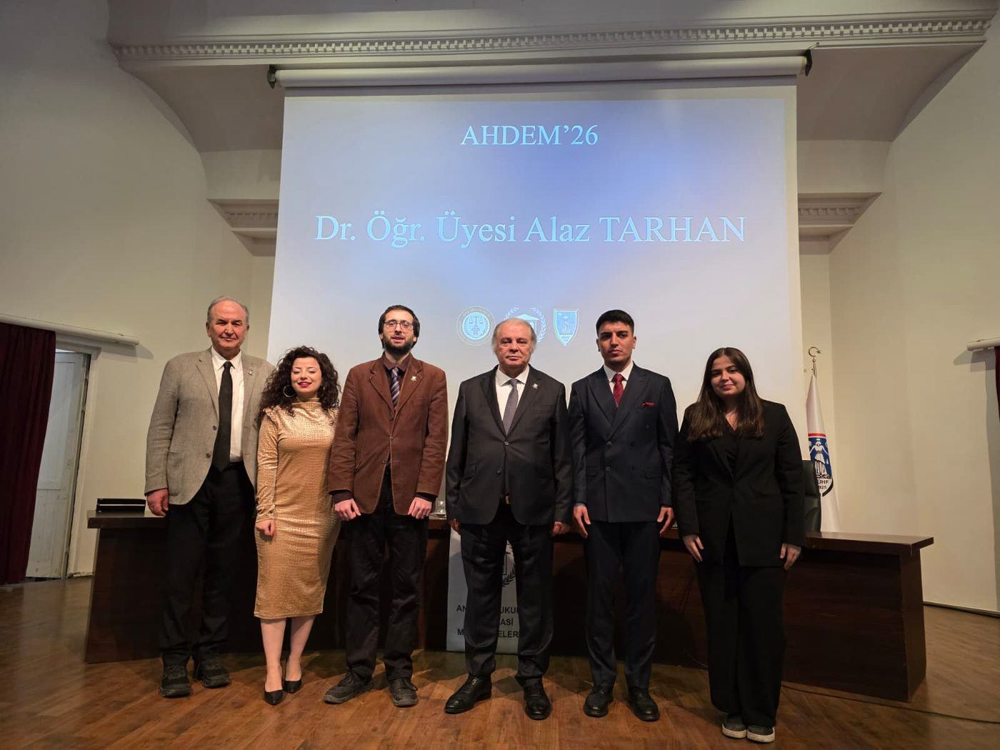
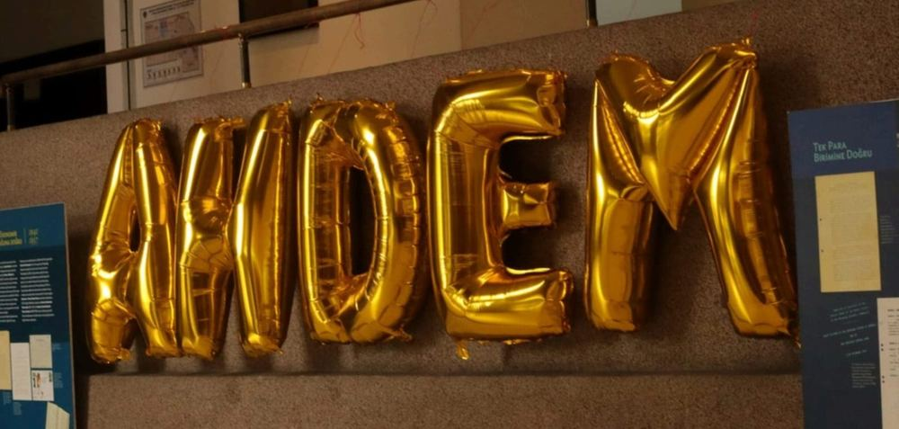
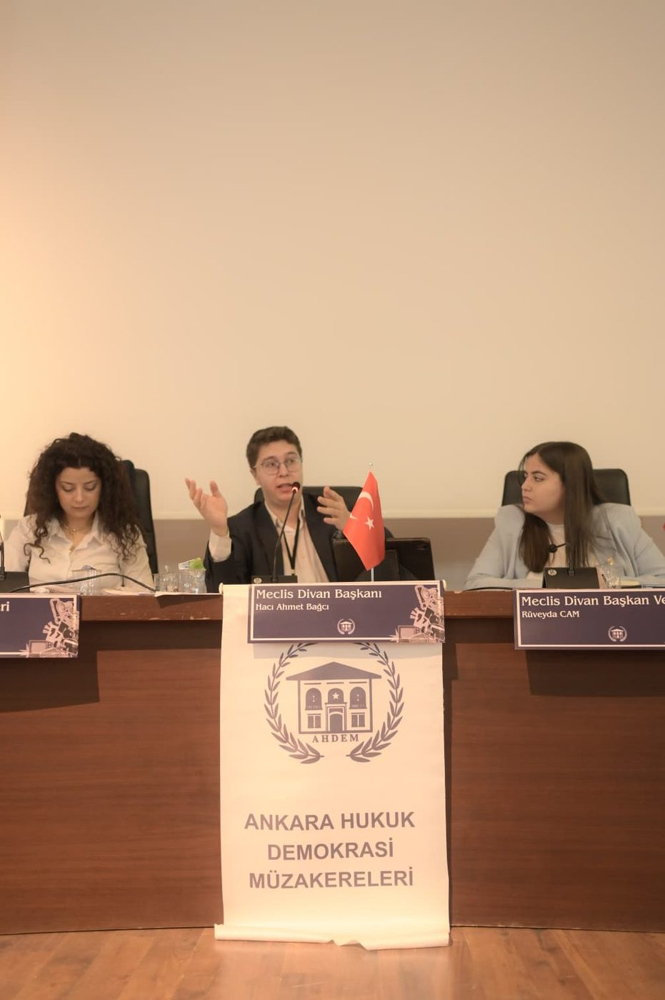
Bir önceki konferanstan kısa bir özet.
Konferans; akademik danışmanlar gözetiminde çalışan bir akademik ekip ile yaklaşık kırk kişilik bir organizasyon ekibi tarafından, her yıl altı aylık bir hazırlık döneminin sonunda hayata geçirilir.
Konferansla, toplulukla ya da başvurularla ilgili aklınıza takılan her şeyi bize sorabilirsiniz.